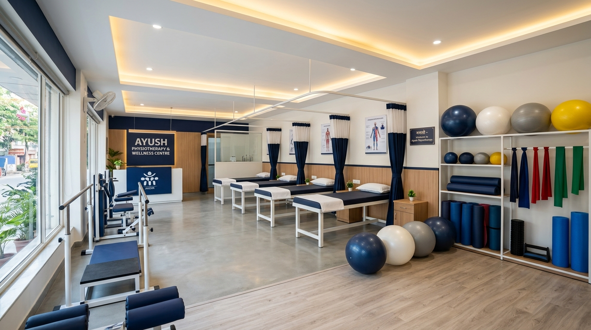
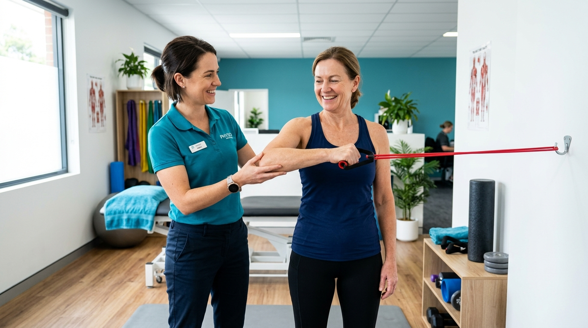
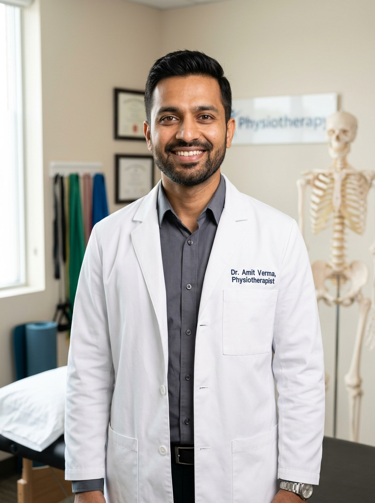

Women's Health
Understanding Pelvic Floor Physiotherapy: Why It Matters
Demystifying pelvic rehabilitation. Discover how strengthening internal muscles can solve bladder leakage, improve posture, and alleviate postpartum discomfort.
Jaipur's premier rehabilitation clinic. Specializing in advanced orthopedics, sports recovery, and comprehensive women's health physiotherapy — from prenatal guidance to pelvic floor rehabilitation.

"I highly recommend this place for physiotherapy..."

Established near Jaipur’s iconic Akshardham Temple, **Bliss Physiotherapy & Women's Health** has grown to become the city's trusted rehabilitation sanctuary. Founded on the principle that recovery should be precise, empathetic, and personalized, we blend modern therapeutic sciences with hands-on dedication.
Our clinic stands out as a leading center for Women's Health Physiotherapy, offering discrete, specialized care for pelvic health, urinary incontinence, diastasis recti, and prenatal/postnatal recovery. We believe in treat-the-cause rather than just masking the symptoms, formulating recovery pathways based on functional assessment.
We take time to listen, checking your medical history and lifestyle before beginning treatment.
Private treatment rooms with specialized, sensitive protocols for pregnancy and pelvic recovery.
We construct exercise targets that prevent future re-injury, helping you return stronger.
Select a category below to explore the targeted services we offer at our Jaipur clinic.
Specialized assessment and rehabilitation for pelvic floor weakness, urinary urgency, and pain syndromes.
Safe, targeted exercises supporting expecting mothers and aiding core restoration postpartum.
Mechanical diagnosis and therapy for chronic spine problems, slip discs, and posture disorders.
Techniques to preserve mobility, reduce inflammation, and strengthen muscles surrounding degenerated joints.
Accelerated healing pathways for athletes to return to sport safely with optimal strength conditioning.
Structured medical phases of therapy following joint replacements, ligament repairs, and plate inserts.
Intramuscular stimulation targeting muscular trigger points to immediately release chronic tightness.
Modern FDA-approved physical therapy modalities to reduce inflammation and stimulate nerve pathways.
Search or filter through common physical issues that our personalized clinical protocols address daily.
Sharp pain traveling down the leg, muscle spasms, herniated discs, or lumbar stiffness.
94% Recovery RateInvoluntary urine leaks during coughing/jumping, pelvic organ heaviness, and pelvic floor tightness.
89% Recovery RateSevere restriction of shoulder movements, dull ache at night, and shoulder joint locking.
91% Recovery RateSeparation of abdominal wall muscles following child birth, causing core instability.
92% Recovery RateGrating sensation, stiffness upon waking, weakness walking up stairs, and chronic joint swelling.
88% Recovery RateChronic neck stiffness, radiation into fingers, radiating head aches due to desk postures.
95% Recovery RateInstability at the back or front joints of the pelvis during pregnancy, limiting walking.
90% Recovery RateRe-training neuro-muscular pathways, correcting gait, and improving functional balance post-stroke.
85% Improvement RateOur therapists carry recognized medical accreditations and specialize in specialized rehabilitation branches.
With over 10 years of clinical experience, Dr. Richa specializes in obstetric, gynecological, and pelvic floor rehabilitation. She is dedicated to raising the standard of maternal care and helping women restore pelvic strength.

Dr. Amit has worked alongside state athletes, treating severe sports injuries, post-ligament reconstructive surgeries, and chronic spine disorders. He emphasizes dry needling and biomechanical correcting exercises.
Schedule your comprehensive assessment with our specialists today. Select your details to start a quick assessment via WhatsApp, and our coordinator will confirm your custom slot instantly.
10:00 AM to 8:00 PM. Same-day emergency pain visits available.
Discrete, highly comfortable therapy setups for pelvic health assessments.
We provide full clinical paperwork, diagnostic notes, and receipts for claims.
Skip the forms and consult with our administrator instantly on WhatsApp.
WhatsApp AdministratorCustomize your appointment details to chat with us on WhatsApp.
Empowering you with clinically sound knowledge. Toggle between expert articles and guided home exercises.
Demystifying pelvic rehabilitation. Discover how strengthening internal muscles can solve bladder leakage, improve posture, and alleviate postpartum discomfort.
Prevent cervical neck strains and lower back aches. Five simple movements you can do directly at your desk to release muscle fatigue and spinal pressure.
Recovering from a ligament repair or replacement? Learn why phased movement protocols prevent stiff scar tissue and ensure stable joint flex.
No, you do not need a referral. In India, physiotherapists are primary practitioners. You can book an appointment directly with us. However, if you have recent surgical reports, X-rays, or prescriptions from an orthopedic specialist, please bring them along.
Pelvic floor physiotherapy targets the internal supportive muscles of the bladder, uterus, and bowels. At Bliss, all assessments are conducted in completely private, single-occupancy rooms by Dr. Richa Sharma (PT), maintaining the highest standards of safety, dignity, and clinical confidentiality.
We recommend wearing loose, comfortable athletic clothing. For knee or back evaluations, shorts or track pants that can easily fold up are ideal, as this allows the therapist to inspect the joints and apply therapies directly.
This depends entirely on your diagnosis. After your initial 45-minute assessment, your therapist will provide a custom plan of care detailing the expected number of sessions. Minor strains may require 3-5 sessions, while chronic conditions or post-surgery rehab might require 10-15 sessions over several weeks.
Read real reviews left by our patients about their clinical experiences at Bliss.
Gate No. 2, Mahant Swami Marg, opposite Akshardham Temple, Akruti Apartments, Chitrakoot, Jaipur, Rajasthan 302021
Mon - Sat: 10:00 AM - 08:00 PM
Wednesday: Closed (Weekly Off)